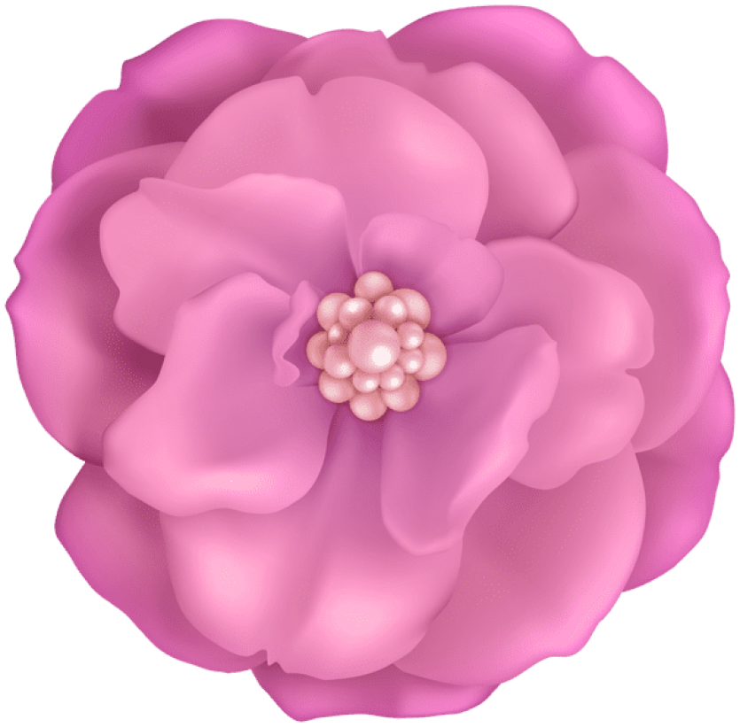
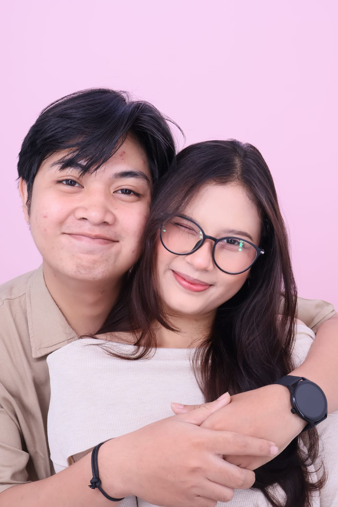
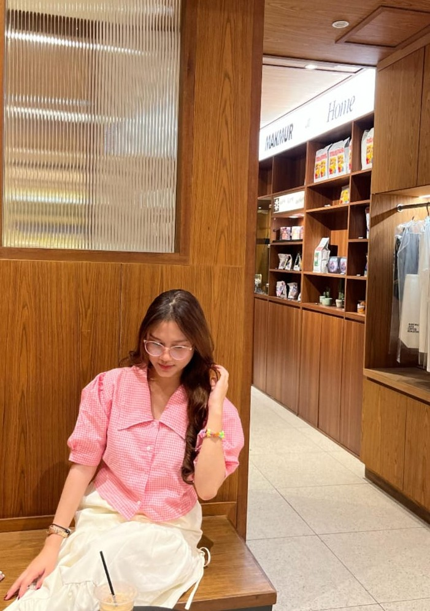
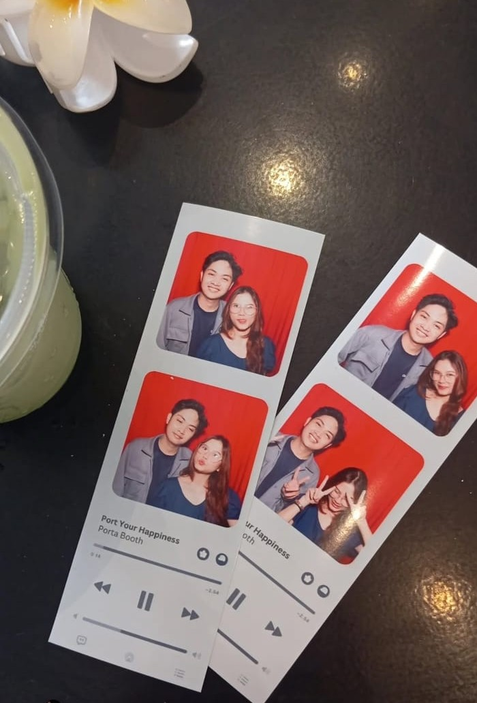
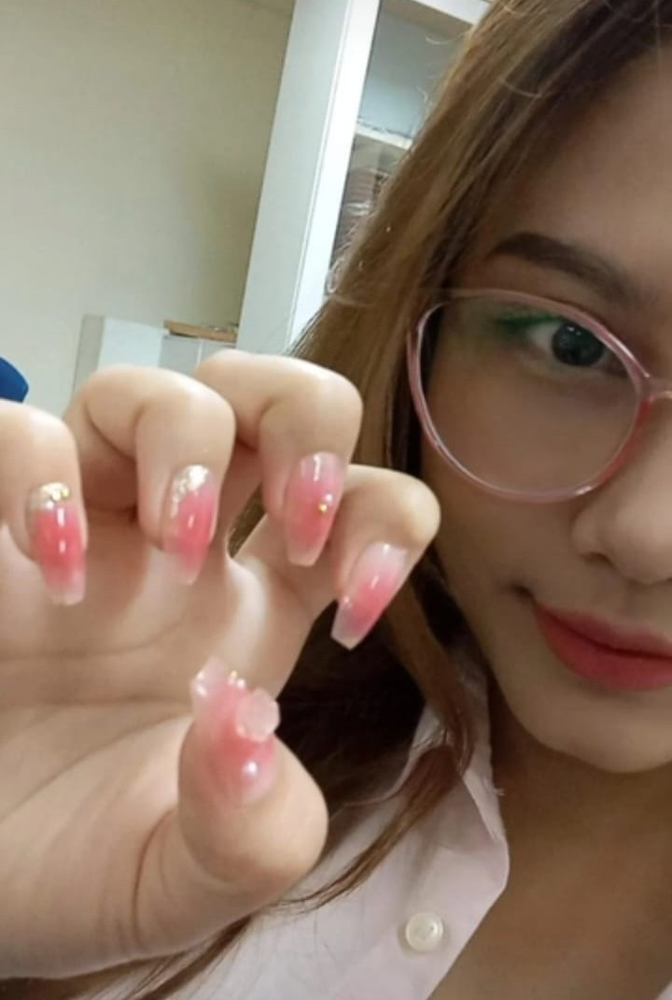
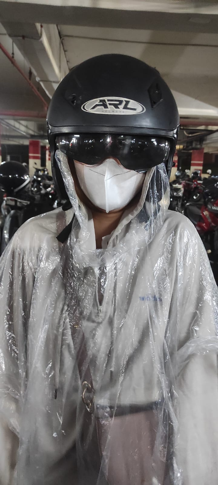
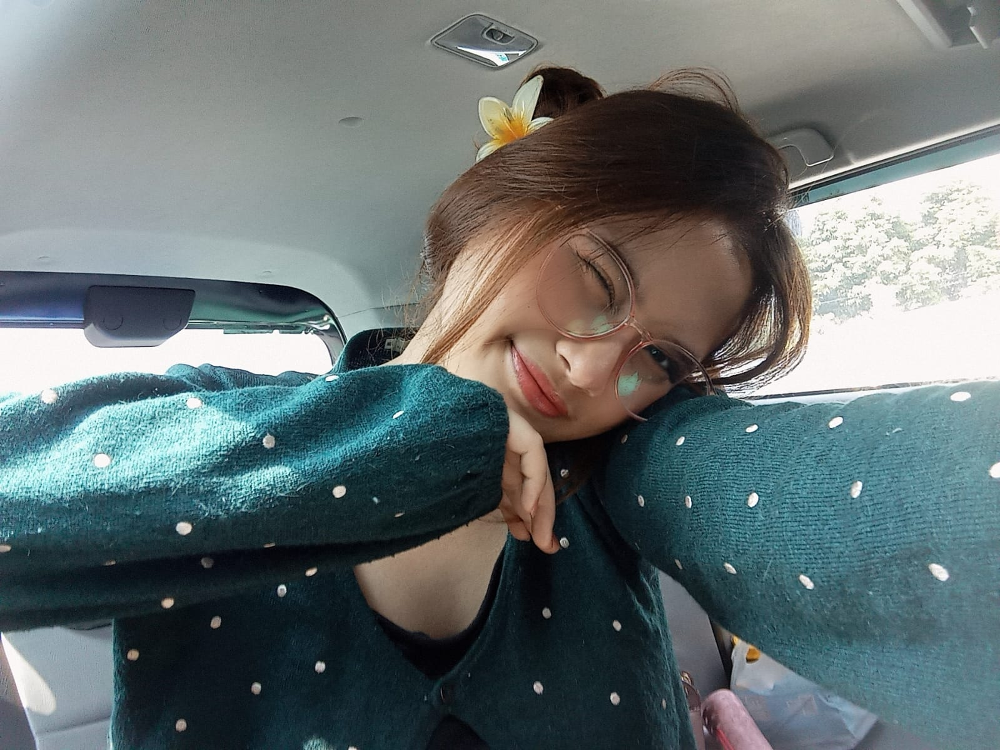

Tap or Swipe to Open

Semua dimulai dari sebuah pertemuan sederhana
yang tidak pernah kita rencanakan.
Di saat itu, aku melihat keindahan dunia
tepat di depan mataku.
Siapa yang menyangka,
hanya dengan satu pandangan pertama
bisa membuat hati ini berdebar begitu cepat.
Hehehe

Bahkan pada pertemuan kedua di lobi,
perasaan itu kembali bergelora begitu hebat,
seperti ombak yang menghantam pantai dengan kuat di dalam hatiku.
Aku pun mulai bertanya dalam diam,
apakah mungkin ini… bukti dari cinta?
Kehadiranmu untuk pertama kalinya di PMK
menjadi puncak sukacitaku.
Tanpa sadar, mataku selalu melirik ke arahmu,
seolah itu menjadi bagian dari proses
tumbuhnya cintaku kepadamu.

Rintangan dan halangan sering kali datang silih berganti.
Hal-hal yang tidak diharapkan pun bisa saja terjadi.
Tanpa adanya kesempatan yang jelas,
terkadang membuat diri ini terasa sulit untuk melangkah.
Namun, momen Natal tiba dan menjadi titik balik yang penuh sukacita.
Kesempatan yang ada harus dimaksimalkan dengan sebaik mungkin.
Kebersamaan pada malam itu menjadi langkah awal
untuk saling mengenal satu sama lain.
Hingga akhirnya tiba saatnya
aku memberanikan diri untuk mengatakan kepadamu…
Cinta ini tidak tertahankan
Namun pada kenyataannya,
terkadang jarak menjadi alasan mengapa kita sulit untuk bersama.
Namun, gelora cinta ini tidak dapat dihentikan.
Sekalipun banyak keraguan dari dalam dirimu,
aku tetap berusaha untuk memperjuangkannya.
Hingga akhirnya momen yang membahagiakan itu tiba,
meskipun saat itu terasa seperti harapan terakhir.
Namun tanpa diduga,
momen itu justru menjadi batu loncatan
menuju hari yang begitu penting
hari ketika aku akhirnya mendapatkan hatimu.

Terima kasih sudah menjadi bagian dari hidupku.
Begitu banyak hal yang telah kita lalui bersama
baik suka maupun duka, semuanya kita jalani bersama.
Terima kasih, Bibuyy,
sudah menjadi bagian dari hidupku,
meskipun diriku ini tidak sempurna.
Namun bersamamu, aku merasa sempurna,
karena kamu selalu ada untuk mendukungku.
Terima kasih, sayang,
atas cinta yang kamu berikan kepadaku. 💛

Hari ini genap satu tahun perjalanan kita bersama.
Satu tahun penuh cerita, tawa, dan juga pelajaran yang kita jalani berdua.
Aku berharap ini hanyalah awal dari banyak tahun yang akan kita lalui bersama.
Aku percaya, mulai dari hari ini dan seterusnya, cintaku kepadamu akan selalu terasa baru.
Untukmu,
Handayani Putri Satya Dharma Tambunan ❤️
Our story continues...